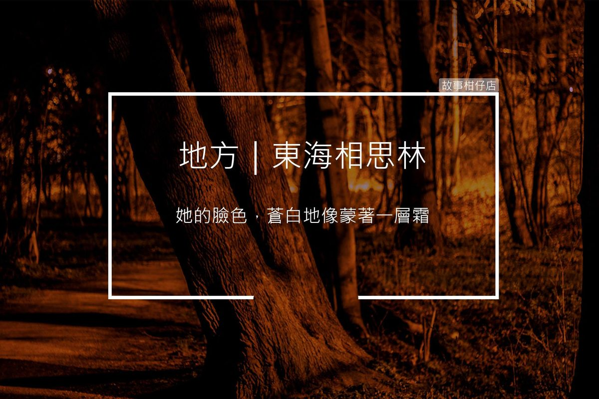

東海相思林

傳說每當入夜之後，相思林會出現一名長髮披肩的女鬼，向路人詢問時間，也有另一說是出現在女鬼橋。
〈東海相思林〉
道路兩旁的樹林，漸漸漫起一層薄霧。曲折迂迴的小徑，隨著不太靈光的路燈若隱若現。阿堯坐在欄杆上，兩手不時撥弄手機，目光卻望著那一片針狀的林葉發呆。
螢幕的亮光，映著他的側臉，一閃一滅。
這條相思林小徑，他算不清楚到底走了多少遍。學妹總嚷嚷這裡晚上多黑多恐怖，他倒不這麼覺得，只是從那天開始，每個晚上他都會來到小徑的入口處，等待。
「妳也在等人嗎？」
今晚等待的人似乎不只他。
阿堯老早就發現，小徑旁的大石邊，有個女孩蹲坐著，柔順的長髮輕輕覆在側臉上，散發著鬱悶的氣息。
他轉頭朝著女孩的方向問，卻沒有一絲回應。聳了聳肩，阿堯自顧自地說著：
「我也是在等人喔。我學妹非常怕黑，可是又愛玩，玩太晚了就打給我，拜託我陪她走相思林.......後來我嫌麻煩，乾脆都先來這裡等她電話.......」
想起他第一次等到學妹，她臉上那又驚喜又感動的表情，阿堯的嘴角忍不住微微揚起。
女孩細長的髮絲隨著晚風輕輕擺動。阿堯可以清楚看見她的臉色，蒼白地像蒙著一層霜。
「不過後來學妹就不再打給我了......」阿堯苦笑，抬頭看著枝枒間露出的淡淡月光。
幾滴霧雨吹上女孩的臉頰。
「謝謝妳聽我牢騷。現在蠻晚的了，要不要我順道送妳回女宿？」阿堯吸吸鼻子，將手機塞進口袋，走到女孩面前問。
『請問現在幾點？』女孩抬起臉，兩眼空洞地望著他。
「咦？應該快12點了吧，等我一下......」阿堯伸手撈向口袋，卻不小心把手機給摔到了地上。
他俯身要撿，卻看見黑亮的螢幕上，隱隱約約映著青白色、爬滿朱紅血絲的人臉。
冷風颯颯吹起，黑雲般的樹林，在他身後湧動著，片片如針的葉脈間，亮起一雙雙晦暗的瞳孔。突然一道慘叫劃破夜空，旋即被林葉摩擦的嚎哭聲吞沒。
★更多的地方
臺北橋